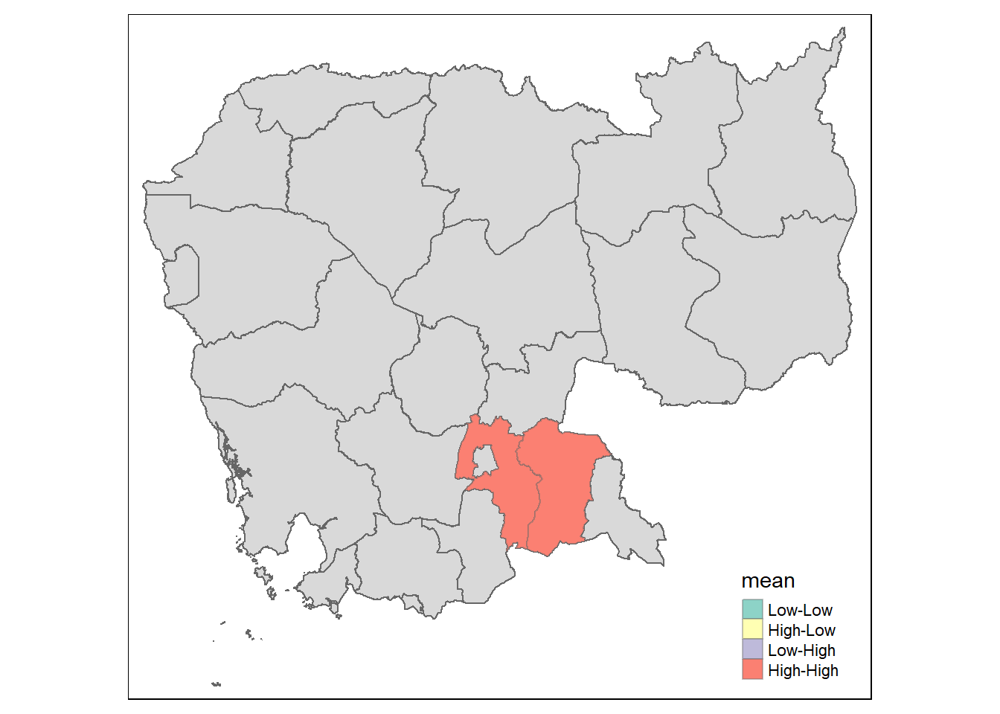

pacman::p_load(sf, tidyverse, tmap, sfdep, spdep, lubridate, plotly)Spatial Autocorrelation
Installing and Loading R Packages
Importing Data
facilities_sum_by_province <- readr::read_rds("rds/facilities_sum_by_province.rds")Global Spatial Autocorrelation
Global spatial autocorrelation assesses whether similar values tend to be clustered together (positive spatial autocorrelation) or dispersed apart (negative spatial autocorrelation) in space. Two commonly used measures for assessing global spatial autocorrelation are Moran’s I and Geary’s C.
Moran’s I
First, we ensure there is no missing data:
facilities_sum_by_province <- subset(facilities_sum_by_province, PROVINCE != "Tbong Khmum")
facilities_sum_by_province %>%
mutate_at(vars(-geometry), ~ifelse(is.na(.), "None", .))Simple feature collection with 24 features and 14 fields
Geometry type: MULTIPOLYGON
Dimension: XY
Bounding box: xmin: 211598 ymin: 1096586 xmax: 784872.1 ymax: 1625374
Projected CRS: WGS 84 / UTM zone 48N
First 10 features:
ID_0 ISO NAME_0 ID_1 NAME_1 HASC_1 CCN_1 CCA_1 TYPE_1 ENGTYPE_1
1 40 KHM Cambodia 1 Bântéay Méanchey KH.OM 0 None Khêt Province
2 40 KHM Cambodia 2 Batdâmbâng KH.BA 0 None Khêt Province
3 40 KHM Cambodia 3 Kâmpôt KH.KP 0 None Khêt Province
4 40 KHM Cambodia 4 Kâmpóng Cham KH.KM 0 None Khêt Province
5 40 KHM Cambodia 5 Kâmpóng Chhnang KH.KG 0 None Khêt Province
6 40 KHM Cambodia 6 Kâmpóng Spœ KH.KS 0 None Khêt Province
7 40 KHM Cambodia 7 Kâmpóng Thum KH.KT 0 None Khêt Province
8 40 KHM Cambodia 8 Kândal KH.KN 0 None Khêt Province
9 40 KHM Cambodia 9 Kaôh Kong KH.KK 0 None Khêt Province
10 40 KHM Cambodia 10 Kep KH 0 None Khêt Province
NL_NAME_1 VARNAME_1 PROVINCE
1 None Banteay Mean Cheay Banteay Meanchey
2 None Battambang|Baat Dambang|Bat Dâm Bâng Batdambang
3 None None Kampot
4 None Kampong Chaam|Kompong Cham Kampong Cham
5 None Kompong Chnang Kampong Chhnang
6 None Kampong Speu|Kompong Speu|Kompong Spueu Kampong Spoe
7 None Kampong Thom|Kompong Thom Kampong Thum
8 None Kandaal Kandal
9 None Koh Kong Kaoh Kong
10 None Keb Kep
FACILITIES_SUM geometry
1 71 MULTIPOLYGON (((288944.1 15...
2 81 MULTIPOLYGON (((249907.2 14...
3 52 MULTIPOLYGON (((408632.1 11...
4 145 MULTIPOLYGON (((578664.2 13...
5 39 MULTIPOLYGON (((443815.2 13...
6 53 MULTIPOLYGON (((414125.8 13...
7 53 MULTIPOLYGON (((559078.1 14...
8 94 MULTIPOLYGON (((479410.6 13...
9 17 MULTIPOLYGON (((268234.6 10...
10 5 MULTIPOLYGON (((422531.3 11...Next, we derive contiguity and assign weights:
wm_q <- poly2nb(facilities_sum_by_province, queen=TRUE)
summary(wm_q)Neighbour list object:
Number of regions: 24
Number of nonzero links: 90
Percentage nonzero weights: 15.625
Average number of links: 3.75
Link number distribution:
1 2 3 4 5 6 7
4 2 5 4 4 4 1
4 least connected regions:
10 12 16 23 with 1 link
1 most connected region:
7 with 7 linksrswm_q <- nb2listw(wm_q,
style="W",
zero.policy = TRUE)
rswm_qCharacteristics of weights list object:
Neighbour list object:
Number of regions: 24
Number of nonzero links: 90
Percentage nonzero weights: 15.625
Average number of links: 3.75
Weights style: W
Weights constants summary:
n nn S0 S1 S2
W 24 576 24 15.64349 103.7165Then, we compute Monte Carlo Moran’s I:
set.seed(1234)
moran_result=moran.mc(facilities_sum_by_province$FACILITIES_SUM,
listw=rswm_q,
nsim=99,
zero.policy = TRUE,
na.action=na.omit)
moran_result
Monte-Carlo simulation of Moran I
data: facilities_sum_by_province$FACILITIES_SUM
weights: rswm_q
number of simulations + 1: 100
statistic = 0.18934, observed rank = 97, p-value = 0.03
alternative hypothesis: greaterVisualising Monte Carlo Moran’s I:
hist_color <- "#69b3a2"
line_color <- "red"
hist(moran_result$res,
freq = TRUE,
breaks = 20,
col = hist_color,
border = "white",
xlab = "Simulated Moran's I",
main = "Histogram of Simulated Moran's I")
abline(v = 0, col = line_color, lwd = 2)
legend("topright", legend = c("Moran's I = 0"), col = c(line_color), lwd = c(2), bty = "n")Geary’s C
We compute Monte Carlo Geary’s C using the same contiguity derived earlier.
geary_result=geary.mc(facilities_sum_by_province$FACILITIES_SUM,
listw=rswm_q,
nsim=99)
geary_result
Monte-Carlo simulation of Geary C
data: facilities_sum_by_province$FACILITIES_SUM
weights: rswm_q
number of simulations + 1: 100
statistic = 0.80401, observed rank = 16, p-value = 0.16
alternative hypothesis: greaterVisualising Monte Carlo Geary’s C:
hist_color <- "#69b3a2"
line_color <- "red"
hist(geary_result$res,
freq = TRUE,
breaks = 20,
col = hist_color,
border = "white",
xlab = "Simulated Geary c",
main = "Histogram of Simulated Geary's C")
abline(v = 1, col = line_color, lwd = 2)
legend("topright", legend = c("Geary's C = 1"), col = c(line_color), lwd = c(2), bty = "n")
Note
For the purpose of the app, users will have the option to choose between Moran’s I and Geary’s C, the number of Monte Carlo simulations for each measure as well as the number of bins for plotting this histogram.
Local Spatial Autocorrelation
Unlike global spatial autocorrelation, which assesses the overall tendency for similar values to cluster together or disperse apart across the entire study area, local spatial autocorrelation examines spatial patterns at a more localized level. Two commonly used measures for assessing local spatial autocorrelation include Local Moran’s I and Getis-Ord Gi* statistics.
Local Moran’s I
First, we derive contiguity:
wm_q <- facilities_sum_by_province %>%
mutate(nb = st_contiguity(geometry),
wt = st_weights(nb,
style = "W"),
.before = 1)
wm_qSimple feature collection with 24 features and 16 fields
Geometry type: MULTIPOLYGON
Dimension: XY
Bounding box: xmin: 211598 ymin: 1096586 xmax: 784872.1 ymax: 1625374
Projected CRS: WGS 84 / UTM zone 48N
First 10 features:
nb
1 2, 15, 21
2 1, 12, 17, 21
3 6, 9, 10, 13, 24
4 5, 7, 8, 11, 19
5 4, 6, 7, 8, 17
6 3, 5, 8, 9, 17, 24
7 4, 5, 11, 17, 18, 21, 22
8 4, 5, 6, 16, 19, 24
9 3, 6, 13, 17
10 3
wt
1 0.3333333, 0.3333333, 0.3333333
2 0.25, 0.25, 0.25, 0.25
3 0.2, 0.2, 0.2, 0.2, 0.2
4 0.2, 0.2, 0.2, 0.2, 0.2
5 0.2, 0.2, 0.2, 0.2, 0.2
6 0.1666667, 0.1666667, 0.1666667, 0.1666667, 0.1666667, 0.1666667
7 0.1428571, 0.1428571, 0.1428571, 0.1428571, 0.1428571, 0.1428571, 0.1428571
8 0.1666667, 0.1666667, 0.1666667, 0.1666667, 0.1666667, 0.1666667
9 0.25, 0.25, 0.25, 0.25
10 1
ID_0 ISO NAME_0 ID_1 NAME_1 HASC_1 CCN_1 CCA_1 TYPE_1 ENGTYPE_1
1 40 KHM Cambodia 1 Bântéay Méanchey KH.OM 0 <NA> Khêt Province
2 40 KHM Cambodia 2 Batdâmbâng KH.BA 0 <NA> Khêt Province
3 40 KHM Cambodia 3 Kâmpôt KH.KP 0 <NA> Khêt Province
4 40 KHM Cambodia 4 Kâmpóng Cham KH.KM 0 <NA> Khêt Province
5 40 KHM Cambodia 5 Kâmpóng Chhnang KH.KG 0 <NA> Khêt Province
6 40 KHM Cambodia 6 Kâmpóng Spœ KH.KS 0 <NA> Khêt Province
7 40 KHM Cambodia 7 Kâmpóng Thum KH.KT 0 <NA> Khêt Province
8 40 KHM Cambodia 8 Kândal KH.KN 0 <NA> Khêt Province
9 40 KHM Cambodia 9 Kaôh Kong KH.KK 0 <NA> Khêt Province
10 40 KHM Cambodia 10 Kep KH 0 <NA> Khêt Province
NL_NAME_1 VARNAME_1 PROVINCE
1 <NA> Banteay Mean Cheay Banteay Meanchey
2 <NA> Battambang|Baat Dambang|Bat Dâm Bâng Batdambang
3 <NA> <NA> Kampot
4 <NA> Kampong Chaam|Kompong Cham Kampong Cham
5 <NA> Kompong Chnang Kampong Chhnang
6 <NA> Kampong Speu|Kompong Speu|Kompong Spueu Kampong Spoe
7 <NA> Kampong Thom|Kompong Thom Kampong Thum
8 <NA> Kandaal Kandal
9 <NA> Koh Kong Kaoh Kong
10 <NA> Keb Kep
FACILITIES_SUM geometry
1 71 MULTIPOLYGON (((288944.1 15...
2 81 MULTIPOLYGON (((249907.2 14...
3 52 MULTIPOLYGON (((408632.1 11...
4 145 MULTIPOLYGON (((578664.2 13...
5 39 MULTIPOLYGON (((443815.2 13...
6 53 MULTIPOLYGON (((414125.8 13...
7 53 MULTIPOLYGON (((559078.1 14...
8 94 MULTIPOLYGON (((479410.6 13...
9 17 MULTIPOLYGON (((268234.6 10...
10 5 MULTIPOLYGON (((422531.3 11...Then, we compute Local Moran’s I:
lisa <- wm_q %>%
mutate(local_moran = local_moran(
FACILITIES_SUM, nb, wt, nsim = 99),
.before = 1) %>%
unnest(local_moran)
lisaSimple feature collection with 24 features and 28 fields
Geometry type: MULTIPOLYGON
Dimension: XY
Bounding box: xmin: 211598 ymin: 1096586 xmax: 784872.1 ymax: 1625374
Projected CRS: WGS 84 / UTM zone 48N
# A tibble: 24 × 29
ii eii var_ii z_ii p_ii p_ii_sim p_folded_sim skewness
<dbl> <dbl> <dbl> <dbl> <dbl> <dbl> <dbl> <dbl>
1 0.214 -0.0872 0.166 0.741 0.459 0.48 0.24 0.669
2 -0.00247 -0.0501 0.320 0.0841 0.933 0.82 0.41 0.536
3 -0.0589 0.0139 0.00451 -1.08 0.279 0.28 0.14 0.283
4 1.48 -0.298 1.28 1.58 0.115 0.18 0.09 0.231
5 -0.207 -0.00595 0.0135 -1.73 0.0830 0.12 0.06 -0.0935
6 0.0298 -0.00979 0.00389 0.634 0.526 0.48 0.24 0.235
7 0.0373 -0.00544 0.00432 0.650 0.516 0.54 0.27 0.155
8 1.09 -0.0190 0.289 2.06 0.0390 0.08 0.04 0.424
9 0.213 -0.0651 0.206 0.612 0.541 0.64 0.33 -0.183
10 -0.181 0.131 1.37 -0.267 0.789 0.76 0.38 -1.34
# ℹ 14 more rows
# ℹ 21 more variables: kurtosis <dbl>, mean <fct>, median <fct>, pysal <fct>,
# nb <nb>, wt <list>, ID_0 <dbl>, ISO <chr>, NAME_0 <chr>, ID_1 <dbl>,
# NAME_1 <chr>, HASC_1 <chr>, CCN_1 <dbl>, CCA_1 <chr>, TYPE_1 <chr>,
# ENGTYPE_1 <chr>, NL_NAME_1 <chr>, VARNAME_1 <chr>, PROVINCE <chr>,
# FACILITIES_SUM <int>, geometry <MULTIPOLYGON [m]>Visualising values of Local Moran’s I:
tmap_mode("plot")
tm_shape(lisa) +
tm_fill("ii") +
tm_borders(alpha = 0.5) +
tm_view(set.zoom.limits = c(6,8)) +
tm_layout(main.title = "Local Moran's I of GDPPC",
main.title.size = 0.8)tmap_mode("plot")
tm_shape(lisa) +
tm_fill("p_ii",
breaks = c(0, 0.001, 0.01, 0.05, 1),
labels = c("0.001", "0.01", "0.05", "Not sig")) +
tm_borders(alpha = 0.5) +
tm_layout(main.title = "p-value of Local Moran's I",
main.title.size = 0.8)
Note
For the purpose of the app, users will have the option to pick the Local Moran’s I statistic that they want to plot, as well as the data classification style and the simulations to derive contiguity spatial weight matrix.
LISA Map:
lisa_sig <- lisa %>%
filter(p_ii < 0.05)
tmap_mode("plot")
tm_shape(lisa) +
tm_polygons(id="PROVINCE") +
tm_borders(alpha = 0.5) +
tm_shape(lisa_sig) +
tm_fill("mean", id="PROVINCE") +
tm_borders(alpha = 0.4)
Getis-Ord Gi* Statistics
Gi* statistics are distance-based spatial statistics. Hence, distance methods are required instead of contiguity methods to derive the spatial weight matrix.
wm_idw <- facilities_sum_by_province %>%
mutate(nb = st_contiguity(geometry),
wts = st_inverse_distance(nb, geometry,
scale = 1,
alpha = 1),
.before = 1)
wm_idwSimple feature collection with 24 features and 16 fields
Geometry type: MULTIPOLYGON
Dimension: XY
Bounding box: xmin: 211598 ymin: 1096586 xmax: 784872.1 ymax: 1625374
Projected CRS: WGS 84 / UTM zone 48N
First 10 features:
nb
1 2, 15, 21
2 1, 12, 17, 21
3 6, 9, 10, 13, 24
4 5, 7, 8, 11, 19
5 4, 6, 7, 8, 17
6 3, 5, 8, 9, 17, 24
7 4, 5, 11, 17, 18, 21, 22
8 4, 5, 6, 16, 19, 24
9 3, 6, 13, 17
10 3
wts
1 1.017073e-05, 1.539264e-05, 9.185003e-06
2 1.017073e-05, 1.502025e-05, 1.342133e-05, 9.603265e-06
3 1.146869e-05, 9.084303e-06, 3.321504e-05, 1.555795e-05, 1.889056e-05
4 1.362965e-05, 1.217940e-05, 1.214877e-05, 8.982280e-06, 1.145273e-05
5 1.362965e-05, 1.369902e-05, 1.189533e-05, 9.844541e-06, 1.076453e-05
6 1.146869e-05, 1.369902e-05, 1.187042e-05, 1.257002e-05, 8.828817e-06, 1.102309e-05
7 1.217940e-05, 1.189533e-05, 8.316100e-06, 7.149182e-06, 9.759527e-06, 8.053985e-06, 5.958687e-06
8 1.214877e-05, 9.844541e-06, 1.187042e-05, 4.236501e-05, 2.104978e-05, 1.758677e-05
9 9.084303e-06, 1.257002e-05, 1.232858e-05, 8.741503e-06
10 3.321504e-05
ID_0 ISO NAME_0 ID_1 NAME_1 HASC_1 CCN_1 CCA_1 TYPE_1 ENGTYPE_1
1 40 KHM Cambodia 1 Bântéay Méanchey KH.OM 0 <NA> Khêt Province
2 40 KHM Cambodia 2 Batdâmbâng KH.BA 0 <NA> Khêt Province
3 40 KHM Cambodia 3 Kâmpôt KH.KP 0 <NA> Khêt Province
4 40 KHM Cambodia 4 Kâmpóng Cham KH.KM 0 <NA> Khêt Province
5 40 KHM Cambodia 5 Kâmpóng Chhnang KH.KG 0 <NA> Khêt Province
6 40 KHM Cambodia 6 Kâmpóng Spœ KH.KS 0 <NA> Khêt Province
7 40 KHM Cambodia 7 Kâmpóng Thum KH.KT 0 <NA> Khêt Province
8 40 KHM Cambodia 8 Kândal KH.KN 0 <NA> Khêt Province
9 40 KHM Cambodia 9 Kaôh Kong KH.KK 0 <NA> Khêt Province
10 40 KHM Cambodia 10 Kep KH 0 <NA> Khêt Province
NL_NAME_1 VARNAME_1 PROVINCE
1 <NA> Banteay Mean Cheay Banteay Meanchey
2 <NA> Battambang|Baat Dambang|Bat Dâm Bâng Batdambang
3 <NA> <NA> Kampot
4 <NA> Kampong Chaam|Kompong Cham Kampong Cham
5 <NA> Kompong Chnang Kampong Chhnang
6 <NA> Kampong Speu|Kompong Speu|Kompong Spueu Kampong Spoe
7 <NA> Kampong Thom|Kompong Thom Kampong Thum
8 <NA> Kandaal Kandal
9 <NA> Koh Kong Kaoh Kong
10 <NA> Keb Kep
FACILITIES_SUM geometry
1 71 MULTIPOLYGON (((288944.1 15...
2 81 MULTIPOLYGON (((249907.2 14...
3 52 MULTIPOLYGON (((408632.1 11...
4 145 MULTIPOLYGON (((578664.2 13...
5 39 MULTIPOLYGON (((443815.2 13...
6 53 MULTIPOLYGON (((414125.8 13...
7 53 MULTIPOLYGON (((559078.1 14...
8 94 MULTIPOLYGON (((479410.6 13...
9 17 MULTIPOLYGON (((268234.6 10...
10 5 MULTIPOLYGON (((422531.3 11...Then, we compute Local Gi*:
HCSA <- wm_idw %>%
mutate(local_Gi = local_gstar_perm(
FACILITIES_SUM, nb, wt, nsim = 99),
.before = 1) %>%
unnest(local_Gi)
HCSASimple feature collection with 24 features and 24 fields
Geometry type: MULTIPOLYGON
Dimension: XY
Bounding box: xmin: 211598 ymin: 1096586 xmax: 784872.1 ymax: 1625374
Projected CRS: WGS 84 / UTM zone 48N
# A tibble: 24 × 25
gi_star e_gi var_gi p_value p_sim p_folded_sim skewness kurtosis nb
<dbl> <dbl> <dbl> <dbl> <dbl> <dbl> <dbl> <dbl> <nb>
1 0.867 0.0451 0.000137 0.739 0.460 0.46 0.23 0.595 <int>
2 0.489 0.0431 0.000132 0.396 0.692 0.64 0.32 1.40 <int>
3 -0.867 0.0424 0.000154 -0.811 0.417 0.4 0.2 0.934 <int>
4 2.52 0.0518 0.000101 1.70 0.0893 0.12 0.06 0.523 <int>
5 1.89 0.0423 0.000110 1.89 0.0590 0.1 0.05 0.252 <int>
6 0.526 0.0431 0.000117 0.336 0.737 0.7 0.35 0.500 <int>
7 0.706 0.0428 0.000115 0.474 0.636 0.66 0.33 0.559 <int>
8 2.68 0.0466 0.000103 2.08 0.0378 0.08 0.04 0.595 <int>
9 -0.908 0.0362 0.000126 -0.494 0.621 0.72 0.35 0.632 <int>
10 -0.795 0.0235 0.000237 0.114 0.909 0.78 0.42 1.14 <int>
# ℹ 14 more rows
# ℹ 16 more variables: wts <list>, ID_0 <dbl>, ISO <chr>, NAME_0 <chr>,
# ID_1 <dbl>, NAME_1 <chr>, HASC_1 <chr>, CCN_1 <dbl>, CCA_1 <chr>,
# TYPE_1 <chr>, ENGTYPE_1 <chr>, NL_NAME_1 <chr>, VARNAME_1 <chr>,
# PROVINCE <chr>, FACILITIES_SUM <int>, geometry <MULTIPOLYGON [m]>Visualising Local Gi*:
tmap_mode("plot")
tm_shape(HCSA) +
tm_fill("gi_star") +
tm_borders(alpha = 0.5) +
tm_view(set.zoom.limits = c(6,8)) tm_layout(main.title = "Gi* of Healthcare Facilities",
main.title.size = 0.8)$tm_layout
$tm_layout$main.title
[1] "Gi* of Healthcare Facilities"
$tm_layout$main.title.size
[1] 0.8
$tm_layout$style
[1] NA
attr(,"class")
[1] "tm"tmap_mode("plot")
tm_shape(HCSA) +
tm_fill("p_value",
breaks = c(0, 0.001, 0.01, 0.05, 1),
labels = c("0.001", "0.01", "0.05", "Not sig")) +
tm_borders(alpha = 0.5) +
tm_layout(main.title = "p-value of Gi*",
main.title.size = 0.8)
Note
For the purpose of the app, users will have the option to pick the Gi* statistic that they want to plot, as well as the data classification style and the simulations to derive the distance spatial weight matrix.
HCSA Map
HCSA_sig <- HCSA %>%
filter(p_sim < 0.05)
tmap_mode("plot")
tm_shape(HCSA) +
tm_polygons() +
tm_borders(alpha = 0.5) +
tm_shape(HCSA_sig) +
tm_fill("gi_star") +
tm_borders(alpha = 0.4)